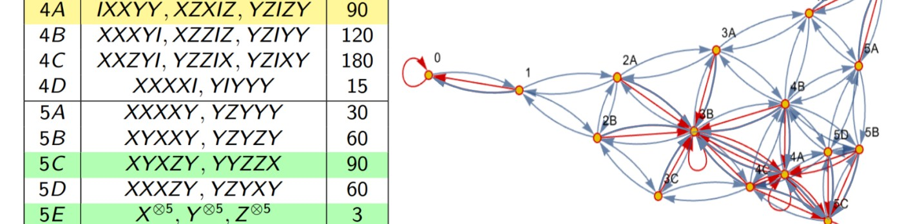
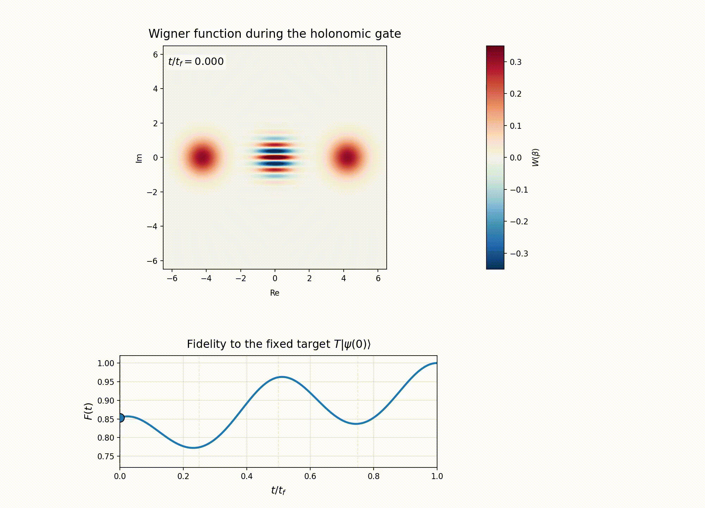

Continuous quantum error correction
Measurement-and-feedback protocols that protect quantum states without interrupting their evolution, under both Markovian and non-Markovian noise.
Quantum error correction · Open quantum systems
I am a quantum information researcher studying how continuous measurement, feedback, and geometric control can protect quantum information in realistic open-system environments.
My work connects continuous quantum error correction, non-Markovian dynamics, and holonomic quantum computation. I am particularly interested in fault-tolerant architectures based on bosonic GKP and cat codes, surface codes, and physically grounded noise models.

Measurement-and-feedback protocols that protect quantum states without interrupting their evolution, under both Markovian and non-Markovian noise.
Geometric gates for GKP and cat-code qubits, with an emphasis on error resilience, continuous monitoring, and paths toward fault tolerance.
Analytical comparison of master equations—including Nakajima–Zwanzig and time-convolutionless approaches—with exactly solvable microscopic models.
Quantum error correction under correlated noise, leakage, non-Markovian environments, and hardware-relevant constraints.

arXiv preprint
A. Lanka, J. García-Nila, and T. A. Brun
arXiv preprint
A. Lanka, J. García-Nila, and T. A. Brun
Physica Scripta 94, 075002
J. G. Martínez-Herrera, J. García-Nila, and M. A. Solís
2023–2026
Introduction to Quantum Information Science; Quantum Information Theory; Open Quantum Systems; Linear Algebra for Engineering.
2019–2021
Contemporary Physics; Basic Science; Electromagnetism; Multivariable Differential and Integral Calculus.
2020–2026
University of Southern California · Quantum Information Science · Advisor: Todd A. Brun
2020–2024
University of Southern California
2016–2019
Universidad Nacional Autónoma de México · Advisor: M. A. Solís Atala
2011–2015
Universidad Nacional Autónoma de México · Gabino Barreda Medal